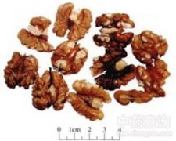

核桃仁

拼音
Hé Tɑo Rén
别名
胡桃仁、胡桃肉、核桃
来源
本品为胡桃科植物胡桃Juglans regia L. 的干燥成熟种子。秋季果实成熟时采收，除去肉质果皮，晒干，再除去核壳及木质隔膜。
生境分布
生于较湿润的肥沃肥沃土壤中，多栽培于平地或丘陵地带。主产河北、北京、山西、山东。
药材特点
落叶乔木。羽状复叶互生；小叶5～9，对生，卵形、椭圆形或椭圆状卵形，长6～15cm，宽3～6cm，先端尖，全缘。花单性同株，与叶同时开放；雄？荑花序下垂，花密生，雄蕊6～30；雌花序簇生，直立，生于幼枝的顶端，有花1～3，子房下位，密被毛。核果近球形，外果皮肉质，绿色；内果皮骨质，坚硬，有不规则的浅沟。花期5月，果期10月。
性状
本品多破碎，为不规则的块状，有皱曲的沟槽，大小不一；完整者类球形，直径2～3cm。种皮淡黄色或黄褐色，膜状，维管束脉纹深棕色。子叶类白色。质脆，富油性。无臭，味甘；种皮味涩、微苦。
性味
甘，温。
功能主治
补肾，温肺，润肠。用于腰膝酸软，阳痿遗精，虚寒喘嗽，大便秘结。
用法用量
6～9g。
化学成分
含脂肪油，主成分为亚油酸、油酸、亚麻酸的甘油酯；另含蛋白质、碳水化合物、α-及γ-维生素E、维生素B2。
药理作用
1：无药理作用
摘录
《中国药典》